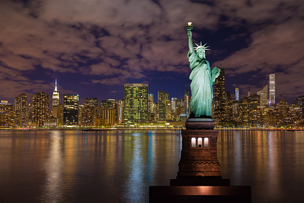
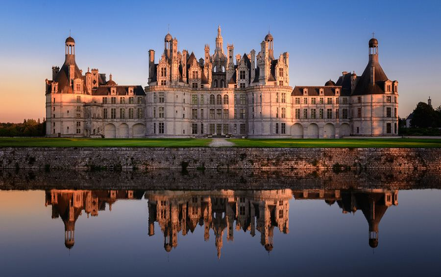
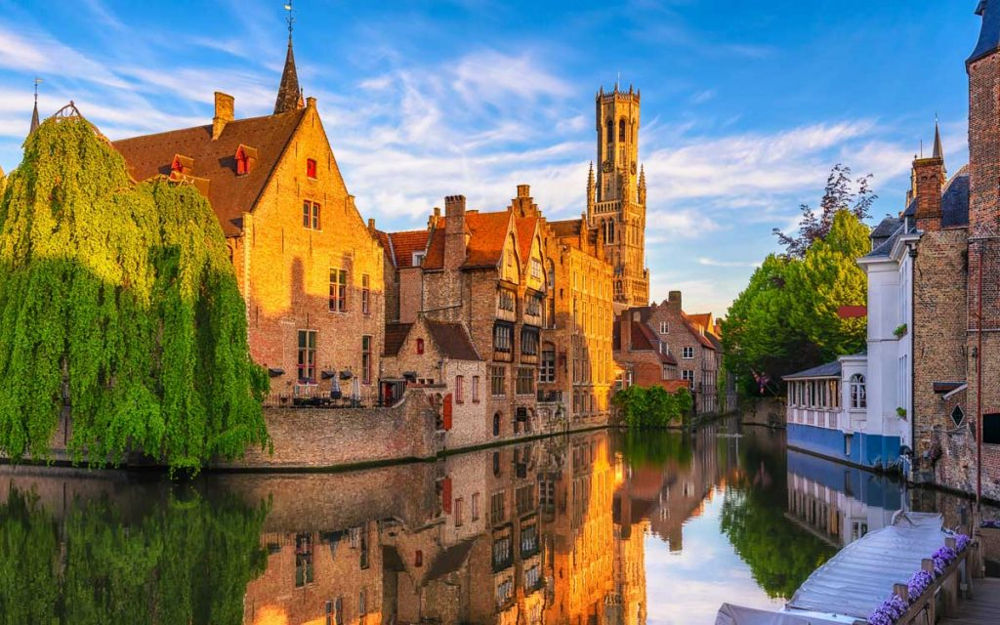

Nova York
Nova York é um caldeirão cultural onde cada esquina revela uma nova experiência. Caminhar por Manhattan é como passear por cenários de filmes que marcaram gerações. A cidade pulsa energia com suas luzes, diversidade e ritmo acelerado. De manhã, você pode tomar um café no Central Park e à noite se perder entre os letreiros da Times Square. Tudo é possível na cidade que nunca dorme, e a aventura está sempre à sua espera.
- Central Park
- Times Square
- Estátua da Liberdade
Roma

Roma é um mergulho profundo na história da civilização ocidental. Andar pelas ruas de paralelepípedo é caminhar ao lado de impérios antigos e lendas eternas. O cheiro de pizza fresca se mistura com o som das fontes e das músicas de rua. A cidade convida a desacelerar, contemplar e se apaixonar pela arte que brota de cada praça. Roma é intensa, romântica e mágica, um lugar onde o passado vive em harmonia com o presente.
- Coliseu
- Fontana di Trevi
- Vaticano
Paris

Paris encanta com sua elegância inconfundível e charme atemporal. A Torre Eiffel ilumina os céus enquanto cafés acolhedores oferecem croissants fresquinhos. Cada bairro tem sua alma própria, do boêmio Montmartre ao luxuoso Champs-Élysées. Museus renomados, pontes românticas e jardins impecáveis fazem parte do dia a dia. Em Paris, o amor está no ar, e cada momento parece retirado de um romance inesquecível.
- Torre Eiffel
- Louvre
- Montmartre
França
Fora de Paris, a França revela paisagens que parecem pinturas. O Vale do Loire é um conto de fadas com castelos e vinhedos que se estendem até o horizonte. A Provence exala lavanda, luz dourada e vilarejos de pedra que inspiraram Van Gogh. E na Côte d’Azur, o azul do mar encontra o brilho das cidades costeiras. A França é uma viagem sensorial onde gastronomia, arte e beleza se fundem em perfeita harmonia.
- Vale do Loire
- Provence
- Côte d’Azur
Bélgica
A Bélgica é um país que combina tradição e aconchego com surpreendente beleza. Suas cidades parecem saídas de livros de histórias, com canais tranquilos e arquitetura gótica. Bruges, em especial, encanta com suas ruas de paralelepípedo e atmosfera medieval. Os aromas de chocolate artesanal e waffles se espalham por praças encantadoras. Cada esquina é uma descoberta — entre cervejas premiadas, arte flamenga e calor humano.
- Bruxelas
- Bruges
- Gante